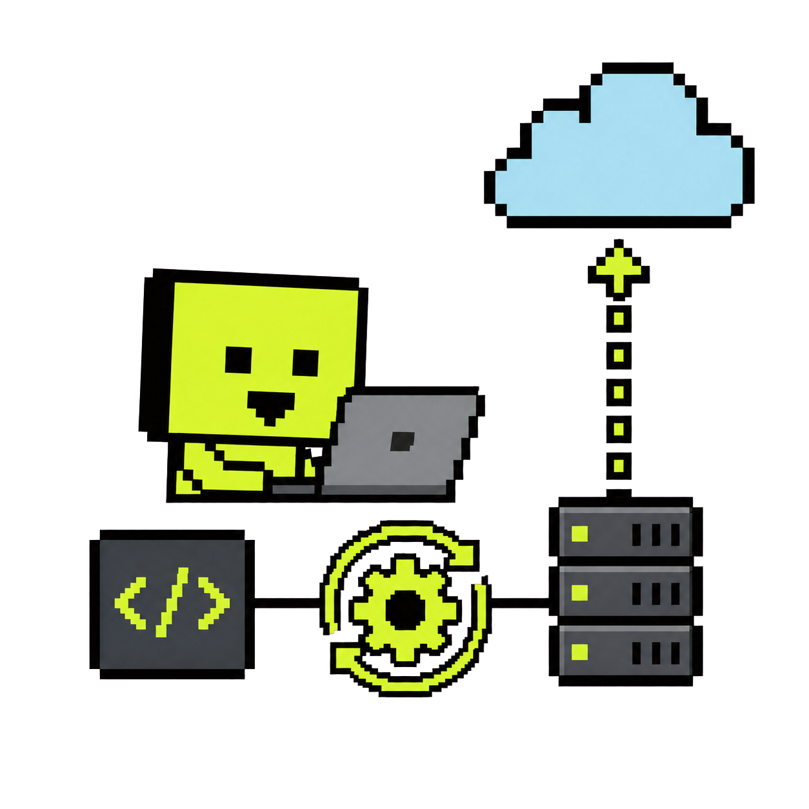
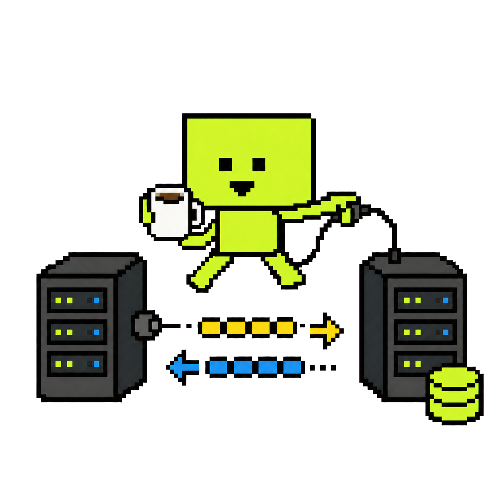
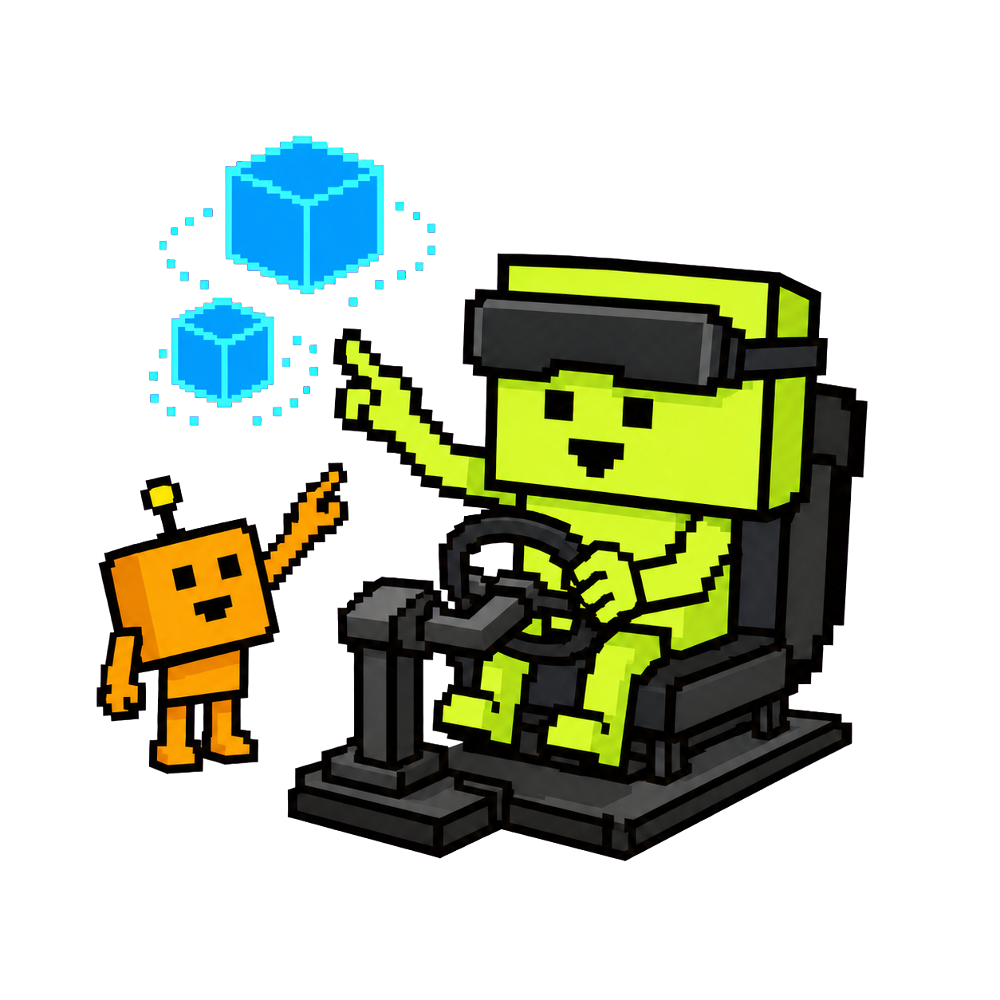

02 / Career
From computer graphics to backend — and production.
I build it, deploy it, and make sure we can roll it back.
Open full CV ↗Cloud platforms / DevOps

Software Engineer / DevOps Engineer · Amadeus
Build backend services and help run the platform around them: CI/CD, OpenShift, Azure, Terraform, Argo CD, and the automation that makes large-scale delivery more dependable.
Java / telecom integration

Software Integration Engineer · Netcompany — INTRASOFT
Built Java and Oracle middleware solutions for Vodafone and OTE, handling SOAP/REST, transformations, WebLogic, production support, and release quality.
Computer graphics / VR / AR

Software Engineer · VVR, University of Patras
Worked on haptic vehicle simulation, HoloLens 2 AR, spatial interaction, and API integrations for EU research projects. This is where I learned to make technical systems tangible and usable.